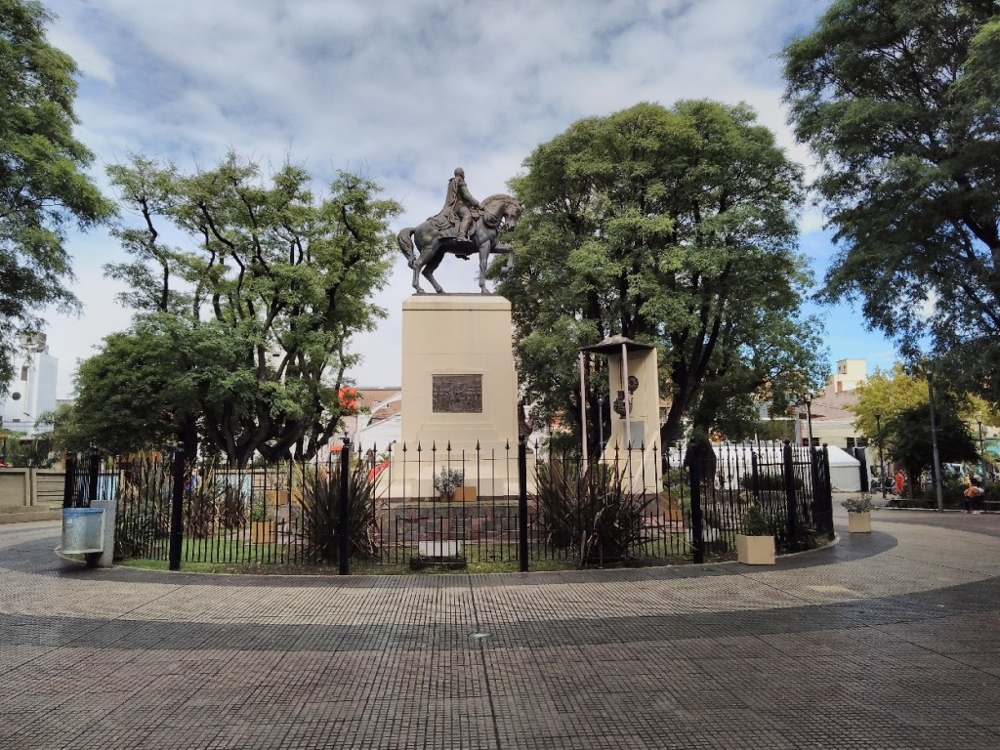

Reclamos
Contanos qué pasa en tu barrio y consultá el estado de tu solicitud.
Ver reclamos →Realizá tus trámites, hacé tus reclamos y encontrá toda la información municipal en un solo lugar.

Elegí una opción para empezar. Te acompañamos en cada gestión.
Contanos qué pasa en tu barrio y consultá el estado de tu solicitud.
Ver reclamos →Reuní tus trámites y reclamos en un lugar. Ingresá a tu cuenta.
Ver mis gestiones →Encontrá información municipal por tema, según lo que necesitás.
Explorar información útil →

Consultá las municipalidades y delegaciones para elegir dónde realizar tu gestión presencial.
Encontrá orientación municipal por tema.
Orientación sobre atención y cuidados de la salud.
Información para acompañar los aprendizajes.
Conocé propuestas y espacios para participar.
Conocé cómo cuidar tu entorno y los espacios comunes.
Respuestas rápidas sobre reclamos y trámites municipales.
Completá el formulario digital con la ubicación y una descripción del problema.
Ingresá a «Mis reclamos» con tu cuenta para consultar su seguimiento.
Los trámites son gratuitos, salvo aquellos que indiquen un sellado o tasa especial.